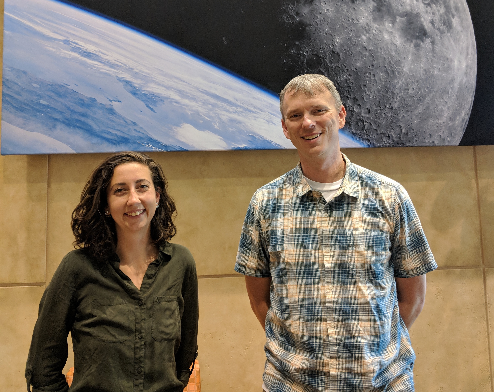
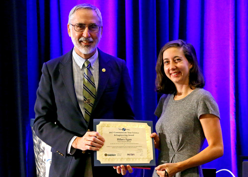

March 15, 2019 - My paper "Stellar Influence on Heavy Ion Escape from Unmagnetized Planets" was accepted in MNRAS.
August 27, 2018 I gave a talk at the Comparative Climatology for Terrestrial planets conference, entitled "Understanding Stellar Influence on Ion Escape from Exoplanets". Full talk available in the gallery.
July 31, 2018 - I was awarded the John T. Gosling Endowed Fellowship for study of space plasma physics.

April 19, 2018 - My paper "Comparison of Global Martian Plasma Models in the Context of MAVEN Observations" was accepted in JGR Space Physics.
Abstract: Global models of the interaction of the solar wind with the Martian upper atmosphere have proved to be valuable tools for investigating both the escape to space of the Martian atmosphere and the physical processes controlling this complex interaction. The many models currently in use employ different physical assumptions, but it can be difficult to directly compare the effectiveness of the models since they are rarely run for the same input conditions. Here we present the results of a model comparison activity, where five global models (single‐fluid MHD, multifluid MHD, multifluid electron pressure MHD, and two hybrid models) were run for identical conditions corresponding to a single orbit of observations from the Mars Atmosphere and Volatile EvolutioN (MAVEN) spacecraft. We find that low‐altitude ion densities are very similar across all models and are comparable to MAVEN ion density measurements from periapsis. Plasma boundaries appear generally symmetric in all models and vary only slightly in extent. Despite these similarities there are clear morphological differences in ion behavior in other regions such as the tail and southern hemisphere. These differences are observable in ion escape loss maps and are necessary to understand in order to accurately use models in aiding our understanding of the Martian plasma environment.
July 15, 2017 - I was awarded the DOE CSGF Communicate Your Science Essay award for my pop-science essay "To Boldly Go (and Survive When We Get There)", subsequently published in the annual DEXIS magazine.
